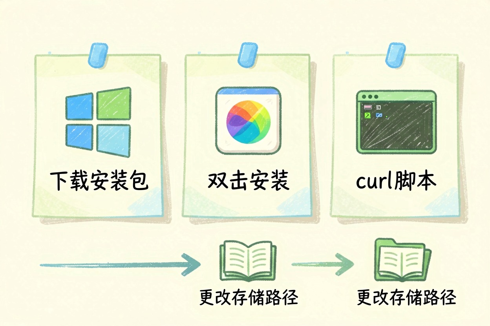
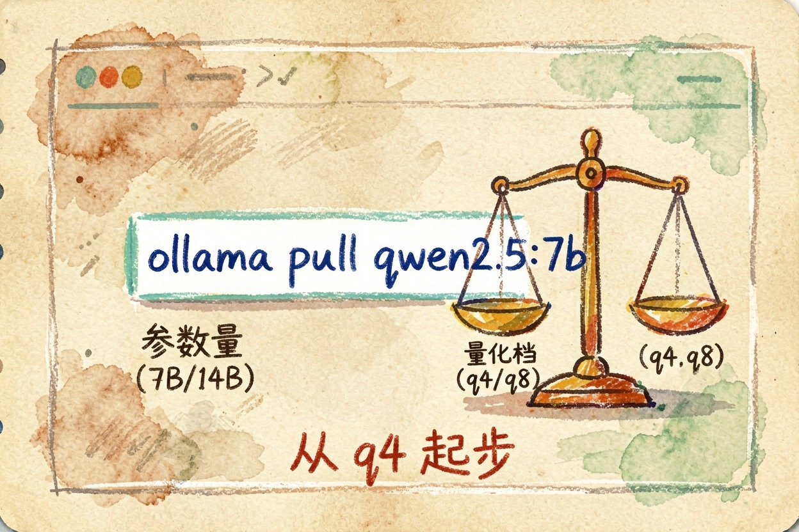
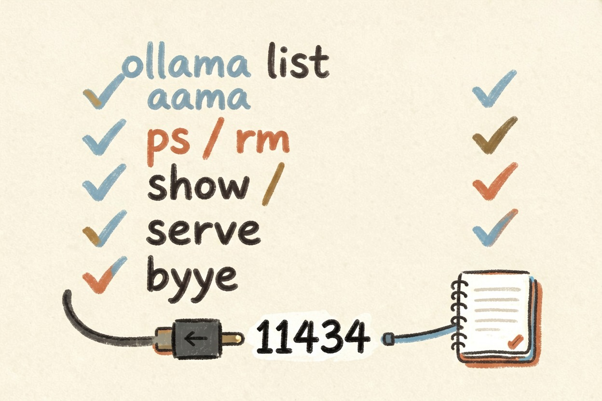
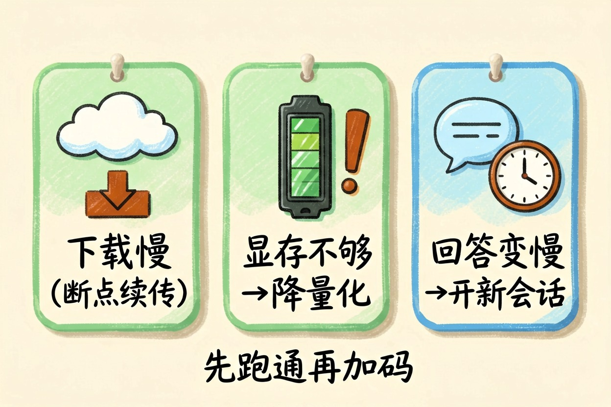
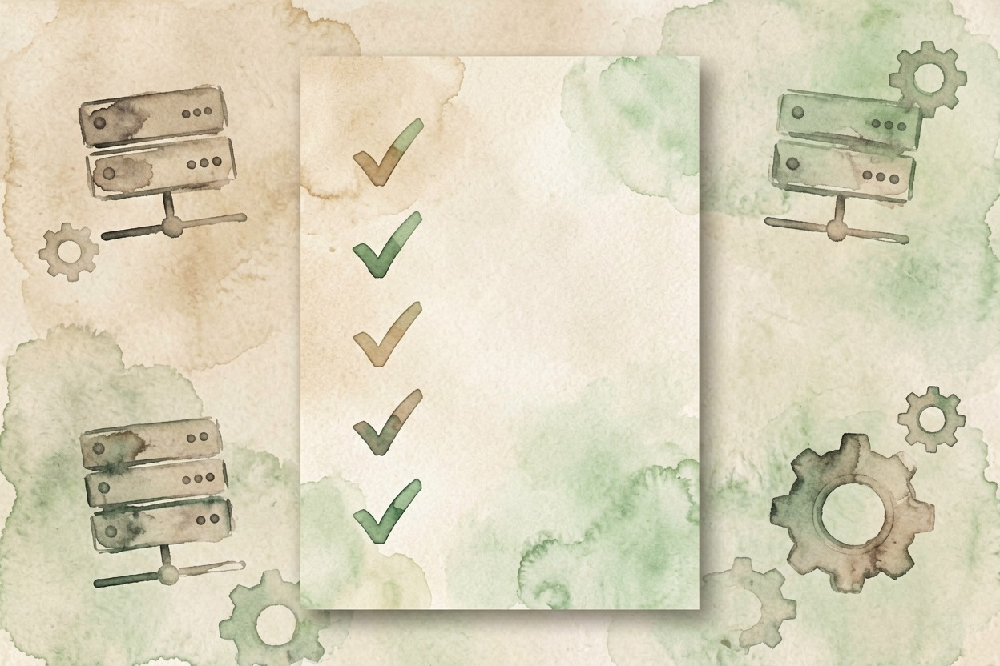

Ollama 怎么用？本地跑开源模型的完整步骤 — Learntide
上手就三条命令：装好、拉模型、开聊。真正卡人的是档位选错，显存不够时它会慢到没法用。
Ollama 怎么用：先搞清它到底管什么

Ollama 怎么用，其实比多数人想得简单。它把开源模型的下载、加载、运行这三件事包在一起，你不用管权重格式，也不用手动配依赖。
它在本机起一个服务，模型跑在你自己的机器上。断网能用，资料不出本机。很多人选它，就图这一条。
代价也清楚。速度取决于你的显卡，效果取决于你能装下多大的模型。它替代不了在线旗舰，只是多一个不上传数据的选项。
安装：三个系统各自的装法

Ollama 安装教程网上一大堆，核心其实就一步。
Windows 和 macOS 直接下官方安装包，双击装完即可。Linux 跑一行脚本。装完在终端敲版本号，有回显就算成了。
curl -fsSL https://ollama.com/install.sh | sh
ollama --version
setx OLLAMA_MODELS "D:\ollama\models"有一步很多人漏掉：改存储路径。模型默认落在系统盘，几个模型下来十几个 G 是常态。装之前先把路径挪到空间大的盘，省得后面搬家。
装完它会常驻后台。不想让它开机自启，去系统的启动项里关掉就行。
Ollama 怎么下载模型：档位比名字重要

拉模型只要一条命令，真正要看的是冒号后面那串。
ollama pull qwen2.5:7b # 拉一个 7B 中文模型
ollama run qwen2.5:7b # 没拉过会自动先拉，然后直接开聊
ollama pull qwen2.5:7b-instruct-q4_K_M # 指定量化档位冒号后面标的是参数量和量化档。同一个模型，7b 和 14b 差着一倍多显存，q4 和 q8 又差将近一倍。参数量决定它有多聪明，量化档决定它占多少显存。
新手的稳妥路线是从 7B 的 q4 档起步。跑顺了、显存还有富余，再往上加一档。反过来先拉最大的，多半是下载半小时、加载三分钟、跑起来一秒蹦两个字。
模型名怎么挑？中文任务优先国产开源模型，语料对得上，问出来的中文自然得多。英文和代码任务，社区微调版本的选择更多。
Ollama 常用命令：这几条日常够用

记住六条，九成场景都能应付。
ollama list # 看本机装了哪些模型
ollama ps # 看现在哪个模型占着显存
ollama rm qwen2.5:7b # 删掉不用的模型腾空间
ollama show qwen2.5:7b # 看参数、量化档和提示词模板
ollama serve # 手动起服务，默认端口 11434
/bye # 对话里退出当前会话服务起来之后有个本地接口，端口是固定的。很多图形前端、笔记插件、浏览器扩展只要填这个地址就能直连，不用再改配置。
想让它更好用，可以自己写一份模型配置，把系统提示词和采样参数固化进去。之后每次调用都带着这套设定，省得反复交代。
三个卡点，和别踩的坑
下载慢是最高频的问题。断点续传是支持的，中断了重新执行同一条 pull 会接着下，不会从头来。实在慢就换个网络环境再试。
显存不够会直接报错，或者退回内存跑。退回内存不会崩，但速度会掉到几乎没法用。这时候降量化档比换模型管用，先试 q4，还不行就换更小的参数量。
回答越聊越慢，多半是对话历史堆太长了。开个新会话就恢复。长文档也别整篇塞，切成段落分次问，稳定得多。
最后提醒两句。别把本地模型当在线旗舰使，写长代码、通读几万字资料这类活，7B 档接不住。也别一上来就拉最大的模型，先跑通再加码，你才知道自己机器的上限在哪。这几步走完，Ollama 怎么用就算真的过关了。

本文信息核对于 2026-08-08。AI 产品的价格、免费额度与功能变动频繁，实际以各工具官网当前说明为准。